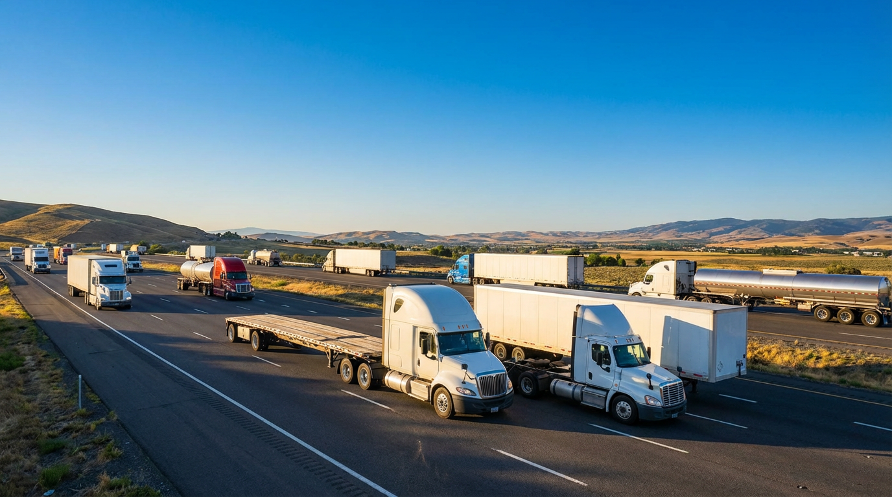

Trucking companies and owner-operators rely on financing to purchase tractors, trailers, and trucks—and to cover fuel, insurance, and operating costs. Axiant Partners connects carriers with lenders offering equipment financing, SBA loans, working capital, and more. Whether you run dry van, flatbed, tanker, or reefer, we match you with financing that fits your fleet and cash flow.
Industry Overview
Trucking businesses face high capital requirements for tractors, trailers, and fleet expansion. Fuel costs, insurance, maintenance, and driver payroll create cash flow pressure between loads and invoice payments. Owner-operators and small fleets often need financing to acquire or replace equipment without draining reserves. Many carriers also need working capital to cover fuel advances, factoring gaps, or seasonal slowdowns.
Tractor-trailer combinations can cost $150,000–$250,000 or more. Equipment financing and working capital loans help trucking companies grow their fleet and manage operating expenses. SBA loans support longer-term needs like real estate, business acquisition, or major fleet purchases, while lines of credit provide flexibility for day-to-day operations and fuel.

How Trucking Companies Use Financing for Their Business
Carriers and owner-operators use financing for tractors, trailers, and day-to-day operations. Many finance semi trucks and trailers through equipment loans—spreading the cost of a $150,000+ rig over several years instead of paying upfront. Working capital helps cover fuel, insurance, repairs, and driver payroll when freight payments lag or loads are light. Some carriers use SBA loans to add multiple trucks, acquire another fleet, or purchase a terminal or yard.
Seasonal freight and payment cycles create cash flow pressure. A flatbed carrier might use a line of credit to cover fuel and maintenance between invoice payments. An owner-operator might finance a second truck to scale up. Whether adding a single trailer or growing the fleet, trucking companies use financing to stay on the road and competitive.
Trucking Business Financing Options
Carriers and owner-operators need financing for tractors, trailers, fuel, and maintenance. Whether you're searching for truck financing, semi truck loans, or trucking working capital, the right product depends on your use of funds and timeline.
Common Trucking Equipment That Businesses Finance
Trucking companies and owner-operators frequently finance tractors, trailers, and specialty equipment. Below are common types, typical cost ranges, and why businesses finance them.

Semi-Trucks (Tractors)
Semi-tractors haul trailers for long-haul and regional freight. New tractors typically cost $120,000–$180,000 or more depending on configuration. Many carriers finance tractors to add capacity or replace aging units without large upfront outlays.
How to finance a semi truck
Box Trucks
Box trucks handle local and regional deliveries, LTL freight, and last-mile logistics. They typically cost $35,000–$80,000 new. Financing helps carriers add or replace units for expanding delivery capacity.
How to finance a box truck
Flatbed Trucks
Flatbeds haul construction materials, machinery, steel, and oversized loads. Tractors and flatbed trailers combined can run $150,000–$250,000 or more. Financing spreads the cost over the equipment's productive life.
How to finance a flatbed truck
Tanker Trucks
Tankers haul fuel, chemicals, milk, and other liquids. Tanker tractors and trailers can cost $200,000–$400,000 or more depending on specifications. Financing helps liquid haulers add or upgrade fleet capacity.
How to finance a tanker truck
Refrigerated Trucks (Reefers)
Reefer tractors and trailers transport temperature-controlled freight. Reefers typically cost $180,000–$300,000 or more. Financing helps produce, pharmaceutical, and food haulers maintain and expand cold-chain capacity.
How to finance a refrigerated truck
Trailers
Dry van, flatbed, and specialty trailers complement tractor fleets. Trailers range from roughly $25,000 to $80,000 or more depending on type and specs. Financing helps carriers add trailers to improve asset utilization and revenue.
Explore trailer financingEquipment Financing Guides for Carriers
Carriers considering equipment loans often ask these questions. Our guides cover credit requirements, used equipment, rates, and approval timelines. For equipment-specific guides, see Equipment by Type. For a full overview, see Equipment Financing.
Apply for Trucking Business Financing
Trucking companies need financing that fits freight cycles and cash flow. Axiant Partners connects carriers and owner-operators with lenders that offer equipment loans, working capital, SBA loans, and more. Submit your information once and we match you with programs suited to your business profile. Get matched with a lender or contact our team to discuss your needs.